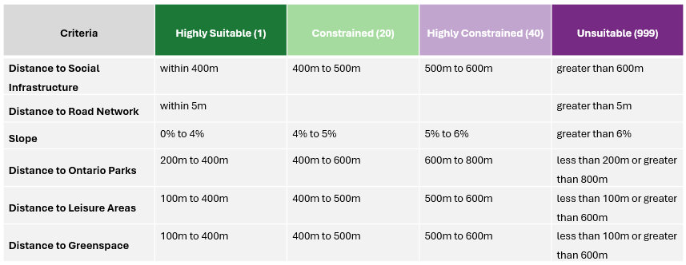

Organizations like The County Foundation consist of diverse individuals performing various roles and tasks. User types offer a versatile method for individuals to acquire licenses for the necessary capabilities and applications they require in either ArcGIS Enterprise or ArcGIS Online. Since the client has minimal experience using Esri products ArcGIS Online is recommended for new users and is a secure SaaS platform without complex setups like in ArcGIS Enterprise.Within which the Creator account, in particular, includes 11 essential apps (including ArcGIS Dashboard, ArcGIS Hub Basics, and others), four field apps (including ArcGIS Survey123, ArcGIS Workforce, and others), and three office apps (including ArcGIS for SharePoint, ArcGIS for Excel, and ArcGIS for Teams). The only additional app that is needed is Community Analyst. Moreover, The County Foundation has qualified for Esri Nonprofit Program, providing them with discounts on software and training.
Please visit the Database page for more information about sourcing and processing the data.
When symbolizing the layers in ArcGIS Pro and ArcGIS Online, Cynthia Brewer's "ColorBrewer2.0" was used to choose color ramps that are accessible to those with colorblindness. The Chrome Extension "Colorblindly" was also used to simulate different types of colorblindness. Creating the solutions with accessibility in mind allows for the products to reach a wider audience.
This Housing Suitability was conducted on ArcGIS Pro using Multi-Criteria Decision Analytic Hierarchy Process to determine the Suitable area for Hosuing

A least cost path analysis was conducted in ArcGIS Pro using a Multi-Criteria Decision Analysis Analytic Hierarchy Process to determine three potential on-demand transit routes. The routes were:
The criteria involved were:
After symbolizing the layers in ArcGIS Pro, the layers were shared as a web layer to ArcGIS Online, where they were brought into Map Viewer to create interactive web maps. Then they were brought into ArcGIS Dashboards, as well as an ArcGIS Experience Builder and ArcGIS Hub. These products contained many elements to elevate the user experience, including:
For step-by-step instructions on how each web application was made, please see the next section on Documentation.
Each member of Team HRS kept individual record of metadata and methodology throughout the project duration. Later, this information was compiled into three separate documents within a shared folder on OneDrive. These documents were initially created to help The County Foundation staff replicate the steps to manipulate data and create web applications in ArcGIS Online, but they are also useful for anyone else new to ArcGIS Pro and ArcGIS Online.